Home › 6 · The objects interface (seaborn.objects)
6 · The objects interface (seaborn.objects)
| # | Composition | Rebuilds |
|---|---|---|
| 1 | so.Dot | a scatter |
| 2 | so.Line + so.Agg | an aggregated trend line |
| 3 | so.Bar + so.Agg + so.Dodge | grouped bars |
| 4 | so.Line + so.Band + so.Est | a line with a confidence band |
| 5 | so.Dots + so.Jitter | a strip plot |
| 6 | so.Bars + so.Hist | a histogram |
| 7 | so.Dots + (so.Line + so.PolyFit) | a regression fit over raw points |
| 8 | so.Area + so.Agg + so.Stack | a stacked area chart |
| 9 | .facet(col=…) | small multiples |
| 10 | .pair(…) and so.Text | a scatter matrix; labelled points |
one minimal composition per row; each ends with .save("images/6_*.png").
Imports for this notebook
import matplotlib.pyplot as plt
import pandas as pd
import seaborn as sns
import seaborn.objects as so
from load_data import load_data
# The objects interface has its own theme; point it at the same house style.
so.Plot.config.theme.update(sns.axes_style("whitegrid"))
penguins = sns.load_dataset("penguins")
fmri = sns.load_dataset("fmri")
healthexp = sns.load_dataset("healthexp")
housing = load_data("california_housing")
sp500 = load_data("sp500")
1 · so.Dot — a scatter
The mark on its own, no stat: one dot per row.
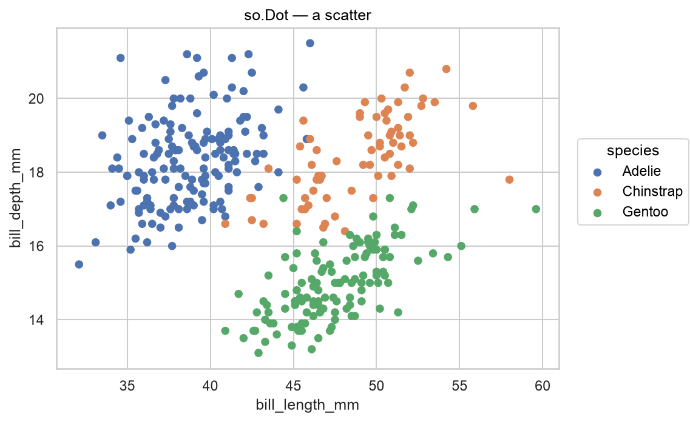
(
so.Plot(penguins, x="bill_length_mm", y="bill_depth_mm", color="species")
.add(so.Dot())
.label(title="so.Dot — a scatter")
)
2 · so.Line + so.Agg — an aggregated trend line
Agg collapses the many close values on each date to their mean, then Line connects them — a whole-market average.
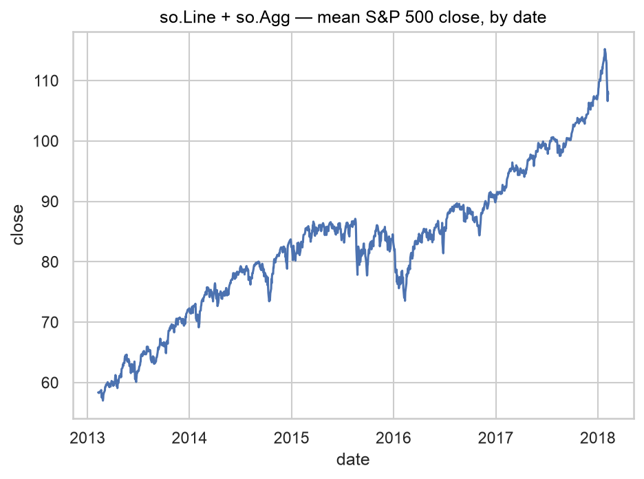
(
so.Plot(sp500, x="date", y="close")
.add(so.Line(), so.Agg())
.label(title="so.Line + so.Agg — mean S&P 500 close, by date")
)
3 · so.Bar + so.Agg + so.Dodge — grouped bars
Agg gives the mean per group, Dodge moves the sex bars side by side.
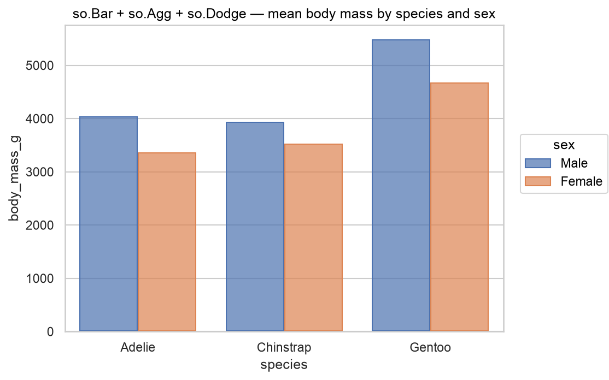
(
so.Plot(penguins, x="species", y="body_mass_g", color="sex")
.add(so.Bar(), so.Agg(), so.Dodge())
.label(title="so.Bar + so.Agg + so.Dodge — mean body mass by species and sex")
)
4 · so.Line + so.Band + so.Est — a line with a confidence band
Est computes the mean and a 95% CI; one layer draws the line at the mean, the other fills the band.
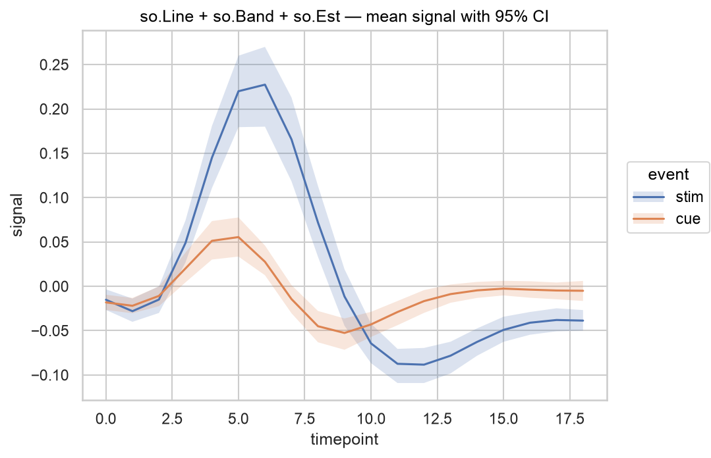
(
so.Plot(fmri, x="timepoint", y="signal", color="event")
.add(so.Line(), so.Est())
.add(so.Band(), so.Est())
.label(title="so.Line + so.Band + so.Est — mean signal with 95% CI")
)
5 · so.Dots + so.Jitter — a strip plot
Jitter is a Move: it offsets the dots along the category axis so they don't sit on top of each other.
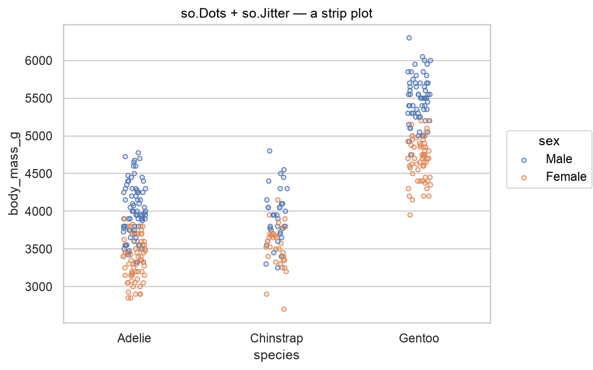
(
so.Plot(penguins, x="species", y="body_mass_g", color="sex")
.add(so.Dots(), so.Jitter())
.label(title="so.Dots + so.Jitter — a strip plot")
)
6 · so.Bars + so.Hist — a histogram
Hist is a Stat: it bins x and counts. Bars (plural) draws the contiguous bars; Bar is for a handful of categorical bars.
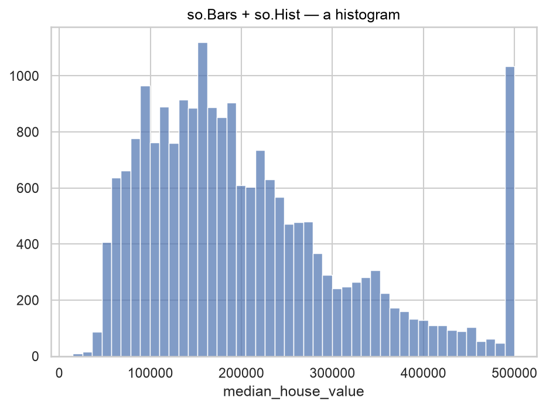
(
so.Plot(housing, x="median_house_value")
.add(so.Bars(), so.Hist())
.label(title="so.Bars + so.Hist — a histogram")
)
7 · so.Dots + (so.Line + so.PolyFit) — a fit over raw points
Two layers on one plot: the raw scatter, then a degree-2 polynomial fit. Layering like this is where the grammar shines.
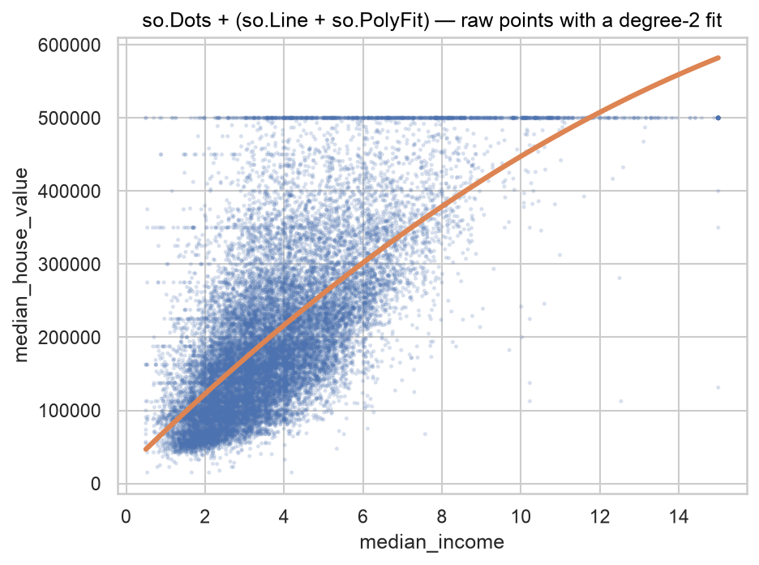
(
so.Plot(housing, x="median_income", y="median_house_value")
.add(so.Dots(alpha=.08, pointsize=2))
.add(so.Line(color="C1", linewidth=3), so.PolyFit(order=2))
.label(title="so.Dots + (so.Line + so.PolyFit) — raw points with a degree-2 fit")
)
8 · so.Area + so.Agg + so.Stack — a stacked area chart
Stack is a Move: it piles each country's area on top of the previous one, so the top edge is the total.
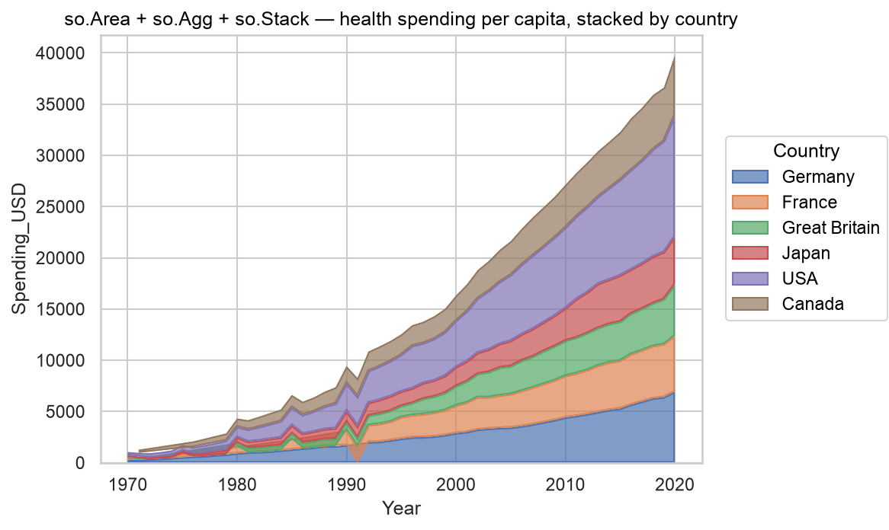
(
so.Plot(healthexp, x="Year", y="Spending_USD", color="Country")
.add(so.Area(alpha=.7), so.Agg(), so.Stack())
.label(title="so.Area + so.Agg + so.Stack — health spending per capita, stacked by country")
)
9 · .facet(col=…) — small multiples
Faceting is a method on Plot, not a separate object — one call splits the same layers across panels, one per island. (A string title would repeat in every panel, so the facet variable's values serve as the panel headers.)
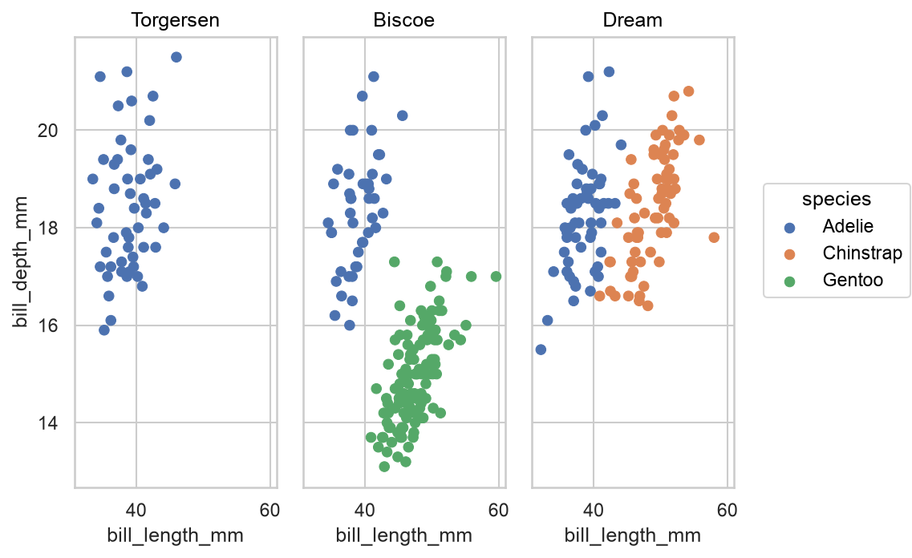
(
so.Plot(penguins, x="bill_length_mm", y="bill_depth_mm", color="species")
.add(so.Dot())
.facet(col="island")
)
10 · .pair(…) and so.Text
.pair() builds a scatter-matrix-style grid from lists of variables. so.Text is a mark that draws a label at each point (from a text= channel).
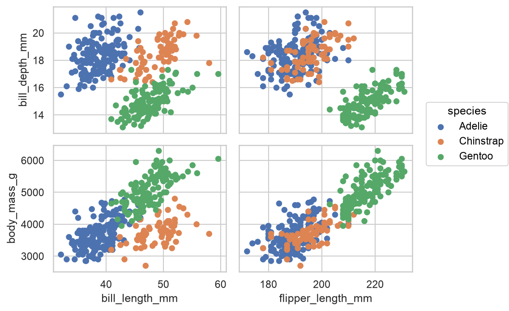
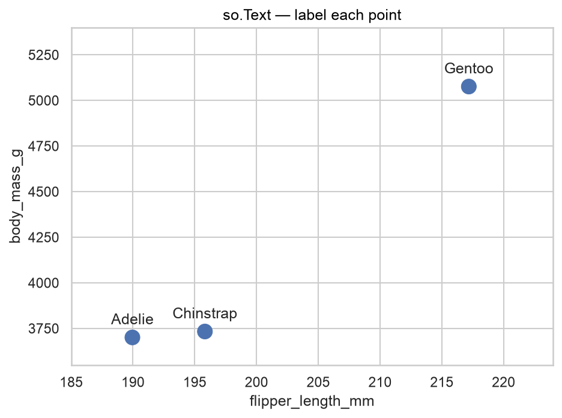
# .pair() builds the grid; like .facet(), a string title would repeat per panel.
(
so.Plot(penguins, color="species")
.pair(x=["bill_length_mm", "flipper_length_mm"], y=["bill_depth_mm", "body_mass_g"])
.add(so.Dot())
)
species_means = (
penguins.groupby("species", as_index=False)[["flipper_length_mm", "body_mass_g"]].mean()
)
(
so.Plot(species_means, x="flipper_length_mm", y="body_mass_g", text="species")
.add(so.Dot(pointsize=12))
.add(so.Text(valign="bottom", offset=8))
.limit(x=(185, 224), y=(3550, 5400))
.label(title="so.Text — label each point")
)
When to reach for the objects interface
Use it when:
- You're layering several things on one plot (raw points + a fit, a line + its
band, bars + labels) —
.add()stacks cleanly, where the classic API needs several functions that don't always agree on defaults. - You want one consistent syntax for everything: the same
Plot/.add()/.facet()/.pair()/.scale()grammar covers scatter, line, bar, area, histogram… no separatescatterplot/lineplot/barplotsignatures to remember. - You want to swap a Stat or Move without changing the Mark —
so.Bar()withso.Hist()is a histogram, withso.Agg()a bar chart.
Stick with the classic functions when:
- You need something the objects interface doesn't have yet —
PairGrid-style per-region control,clustermap,jointplot's marginal axes,regplot's bootstrap CI. - You're leaning on the large body of examples and Stack Overflow answers written for the function API.
- You want a finished styled figure in one line — the classic figure-level functions still do more out of the box.
The two APIs share the same theme and colour system and can be mixed in the same notebook.